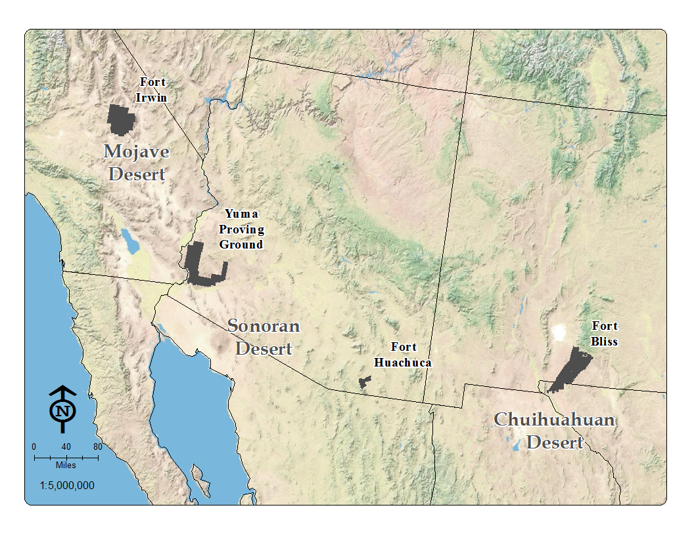
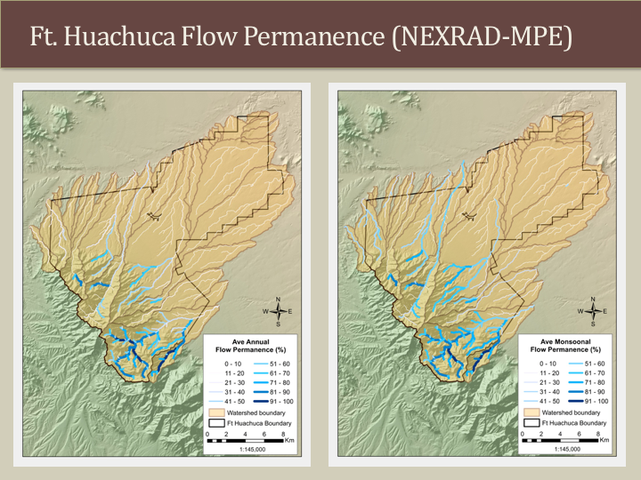

Using Rainfall-Runoff Models to Characterize Ephemeral Streams in the Desert Southwest

For four years I worked as a Research Associate with the University of Arizona and the Agricultural Research Station in Tucson, Arizona. My job was to use the Automated Geospatial Watershed Assessment (AGWA) tool to run hydrologic simulations on various watershed in four distinct desert ecosystems in the Southwest US. My work was part of a larger SERDP project to develop an ecohydrological classification to help manage the watersheds on Department of Defense lands. My contribution to the project was mainly the hydrologic modeling, but there were two other main components that I was also involved: 1) classifying riparian vegetation types based on LiDAR and Quickbird imagery and 2) associating different wildlife habitats with each vegetation class.

This project taught me a lot about hydrologic modeling and statistical analysis, but it was also where I first began to write code as I had to access AGWA's core files to adjust the model parameters while I was calibrating my simulations. One of the best parts of the research was getting to spend about two weeks at each study site in some really remote and pristine desert ecosystems collecting hydrogeomorphologic and vegetation data. I also got a lot of experience with presenting as we had to deliver status updates at each of the installations as well as at an annual meeting in D.C. in front of a lot of military brass. Later, I also presented my hydrologic results at the US International Association of Landscape Ecology annual conference in 2013 in Austin, Texas. Overall, it was great experience and I learned a lot about desert ecology and hydrology from some of the most-knowledgeable scientists in the Southwest. The complete SERDP report can be accessed here and the abstract from my thesis and links to download my thesis and thesis presentation are below.

Abstract
In the southwestern United States, the ephemeral nature of most streams often obscures the importance of the underlying ecohydrological processes that occur within them. The integrity of the riparian vegetation is primarily determined by the hydrologic regime of the adjacent stream channel. Determining the frequency and magnitude of streamflow events is an essential component of any assessment of riparian productivity. Flow permanence and peak flow are two key metrics that have been used to describe the flow regime in dryland environments; however, the lack of observational data collected from ephemeral or intermittent streams makes characterization difficult. The objectives of this study are to 1) develop a methodology for determining flow permanence values based on metrics derived from a continuous rainfall-runoff model, 2) determine peak flows from 2, 10, and 100-year, 1-hour design storms from an event orientated rainfall-runoff model, and 3) use climate projection data to explore flow regime changes in response to increasing temperatures to identify which areas would be most susceptible to climate change. Utilizing the Automated Geospatial Watershed Assessment (AGWA) toolkit to set up and run the Soil and Water Assessment Tool (SWAT) and the Kinematic Runoff and Erosion (KINEROS2) models, I was able to replicate hydrologic conditions and provide estimates for flow permanence and peak flow metrics. SWAT model calibration and validation were possible at two stream gauge locations where acceptable streamflow estimates were obtained at monthly intervals. A comparison between different SWAT precipitation inputs revealed that NEXRAD-MPE yielded as reasonable estimates as rain gauge data, justifying its use in areas where observational data are limited. Characterizing the hydrology of ephemeral and intermittent stream channels can allow land managers to better assess riparian conditions and may be used to predict response to changes in the hydrologic regime associated with human disturbances. It can also be used to direct land use activities away from ecologically sensitive areas to help preserve ecosystem health and take into consideration some of the environmental concerns associated with future land use and climate change.